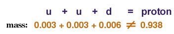

A weird thing about hadrons is that only a very very very small part of the mass of a hadron is due to the quarks in it. For example, a proton (uud) has more mass than the sum of the masses of its quarks:

Most of the mass we observe in a hadron comes from its kinetic and potential energy. These energies are converted into the mass of the hadron as described by Einstein's equation that relates energy and mass, E = mc2.